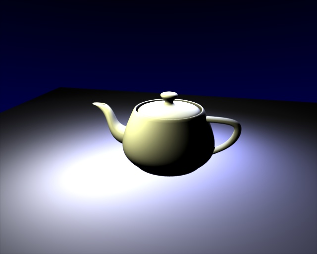
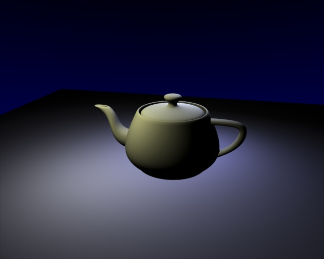
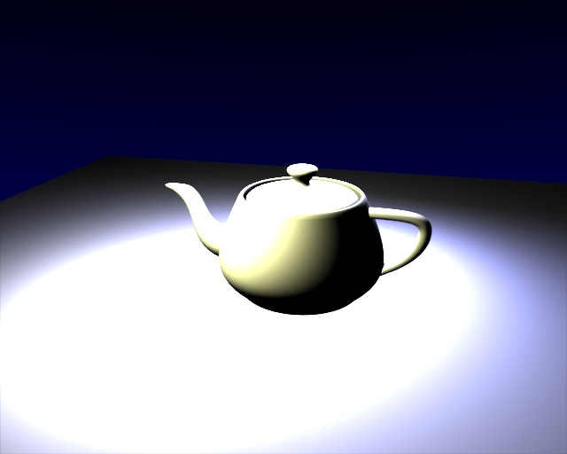
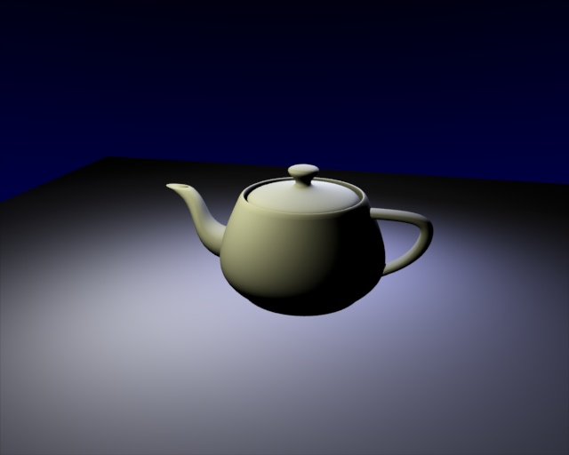

Exposure & Range¶
Reference
| Mode: | All modes |
|---|---|
| Panel: |
Exposure and Range are similar to the "Color Curves" tool in Gimp or Photoshop.
These controls affect the rendered image, and the results are baked into the render. For information on achieving similar affects with render controls, see Color Management and Exposure.
Previously Blender clipped color directly with 1.0 (or 255) when it exceeded the possible RGB space. This caused ugly banding and overblown highlights when light overflowed Fig. Utah Teapot..
Using an exponential correction formula, this now can be nicely corrected.
Options¶
Exposure and Range sliders.
- Exposure
- The exponential curvature, with (0.0 to 1.0) (linear to curved).
- Range
The range of input colors that are mapped to visible colors (0.0 to 1.0).
So without Exposure we will get a linear correction of all color values:
- Range > 1.0
- The picture will become darker; with Range = 2.0, a color value of 1.0 (the brightest by default) will be clipped to 0.5 (half bright) (Range: 2.0).
- Range < 1.0
- The picture will become brighter; with Range = 0.5, a color value of 0.5 (half bright by default) will be clipped to 1.0 (the brightest) (Range: 0.5).
Examples¶
With a linear correction every color value will get changed, which is probably not what we want. Exposure brightens the darker pixels, so that the darker parts of the image will not be changed at all (Range : 2.0, Exposure : 0.3).

An overexposed teapot. |

Range: 2.0. |

Range: 0.5. |

Range: 2.0, Exposure: 0.3. |
{kind=link}
{kind=link}
{kind=link}
{kind=link}
Gợi ý
Try to find the best Range value, so that overexposed parts are barely not too bright. Now turn up the Exposure value until you are satisfied with the overall brightness of the image. This is especially useful with area lamps.